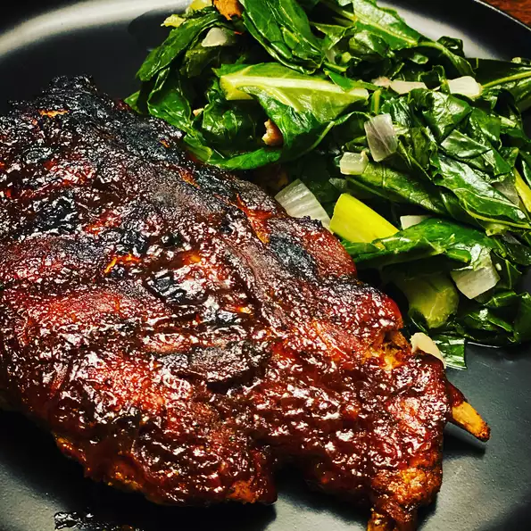

InstantPot Sweet Baby Back Ribs

Tender, sweet, and sticky baby back ribs that only take 1 hour from prep to plate.
Ingredients
- 2 racks baby back pork ribs
Dry Rub:
- 1/4 cup dark brown sugar
- 2 T garlic salt
- 2 T chili powder
- 1 t ground black pepper
- 1 t cayenne pepper, or to taste (optional)
Cooking Liquid:
- 1 cup beef broth
- 12 fluid oz root beer
- 1 T apple cider vinegar
- 1 t liquid smoke flavoring
- 1 cup bbq sauce
Steps
- Use a butter knife to cut into an of the rib racks. Use a paper towel to grab and lift off the silvery membranes.
- combine dry ingredients in bowl. Coat the ribs generously with the dry rub.
- Place the trivet inside the InstantPot. Pour in cooking liquids. Place ribs on the trivet on their sides, with one inside the other. Close and lock the lid and make sure the vent is sealed. Select manual high pressure and set the timer for 30 minutes. Allow 10 to 15 minutes for pressure to build.
- Release pressure using the natural-release method according to manufacturer's instructions for 15 minutes. Release remaining pressure carefully using the quick-release method according to manufacturer's instructions, about 5 minutes. Unlock and remove lid.
- Set an oven rack about 6 inches from the heat source and preheat the oven's broiler on the highest heat setting.
- Transfer ribs to a broiling pan and generously coat with bbq sauce.
- Cook in the broiler until bbq sauce is bubbly and caramelized, 5 to 7 minutes.